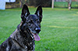
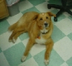

Montana Pets on the Net
Rainbow Bridge Memorial Page
There is a bridge connecting Heaven and Earth. It is called the Rainbow Bridge because of it's many colors.
Just this side of the Rainbow Bridge, there is a land of meadows, hills and valleys with lush green grass. When a beloved pet dies,
the pet goes to this place. There is always food and water, and warm Spring weather. Those old and frail animals are young again.
Those who have been maimed are made whole again. They play all day with each other.
But there is only one thing missing. They are not with their special person who loved them on earth. So, each day they run and play until the day comes when one suddenly stops playing and looks up. The nose twitches, the ears are up, and the eyes are staring, and this one suddenly runs from the group. You have been seen, and when you and your special friend meet, you take him or her into your arms and embrace. Your face is kissed again and again and you look once more into the eyes of your trusting pet. Then you cross the Rainbow Bridge together, never to be separated.
But there is only one thing missing. They are not with their special person who loved them on earth. So, each day they run and play until the day comes when one suddenly stops playing and looks up. The nose twitches, the ears are up, and the eyes are staring, and this one suddenly runs from the group. You have been seen, and when you and your special friend meet, you take him or her into your arms and embrace. Your face is kissed again and again and you look once more into the eyes of your trusting pet. Then you cross the Rainbow Bridge together, never to be separated.

Mischa loved by Amy Abendroth Missoula, MT
Mischa was the most adorable puppy...Doesn't every dog mommy think that? Her dad was K9 Hector of the Missoula Police Department and her mom was Tasha (owned by another police officer). She was extremely devoted to her people, affectionate, smart, neurotic (just ask her favorite Vet, Patti Prato) and oh-so-sensitive. She had numerous canine and feline brothers and sisters over the years and rolled with all of the changes in her "mom's" life - including numerous residential moves. One of her claims to fame involved eating the dog-sitter's raw Thanksgiving turkey (yes, the ENTIRE thing). She was nothing if not committed! Mischa was surrounded by some of the people she loved most as she left this world. I'm looking forward to seeing her again in the next...mt E-mail notacatfan@gmail.com

Katie ( 1996 - Nov., 22 2006 ) loved by Lisa and Dan Currier, all their friends and family Laurel, MT
Katie came into our lives shortly after we got married. She was my best companion. She was there for me when Dan would be out to sea when he was in the Navy. When I told her dad was coming home she knew we were going to go pick him up at the ship, she would get so exited. She loved to surf the waves down at Virginia Beach, her last days we took her to the river with her life jacket on so she could play in the water, catching water droplets as she splashed but not worry about getting tired. She went everywhere with me. She flew from Virginia to Montana and California with me; we drove from Virginia to Florida I don't even know how many times. She was there for me through a lot. She started to get sick. Nobody could seem to find out what was wrong. I told her when it was time to let me know because she didn't deserve to suffer. They finally found out it was inoperable cancer. She did tell me when it was time. She followed me everywhere and wouldn't let me out of her sight. It was a very hard thing to let her go; she meant so much to me. But she didn't need to suffer she deserved so much better. I miss her still and always will. She was a great girl and everyone she met loved her gentle soul. I know I will meet her again. Donate to Help Every Pet Lisa Currier ddclmc@yahoo.com 206 3rd Ave Laurel, MT 59044; 406-672-2577 E-mail ddclmc@yahoo.comAngus ( 1992 - 2006 ) loved by the Desrosier family
Sweet little Angus, we saved you from a shelter when you were only a pup. You had such energy and loved to play. You had your sight taken away from you so early but that didn't stop you. You still ran around like you could see! Then you got out and are hit by a car..only to walk all the way home with half of your back side hanging. We got you all healed up and made sure you were safe from then on. You are so amazing. I noticed these past few months that you were slowing way down and not running around with the other dogs at all. I found you today trying to hide behind the house and I knew it was time for you to meet the Lord. We will miss you so much. What a joy you were to us. Until we meet again. Merry Christmas †
Randi ( 8 yrs. ) loved by the Ketterling Family Laurel, MT
Randi came into my life late. She was already loved by my husband since she was a tiny puppy. He joined our family, and so did she. I wasn't really a "dog person" I had always had cats. But Randi won me over in a big way. I always felt safe when my husband was out of town. Randi slept by my bed. When my family was sick she would lay by whose ever bed was ill. She always knew. She loved to ride in the truck and go places. She loved long walks, and a good bone or a new chew toy. Randi, you will be missed more than you know. Our hearts ache without you. You have touched us deeply, we love and miss you. E-mail lyndie@ladygreen.com